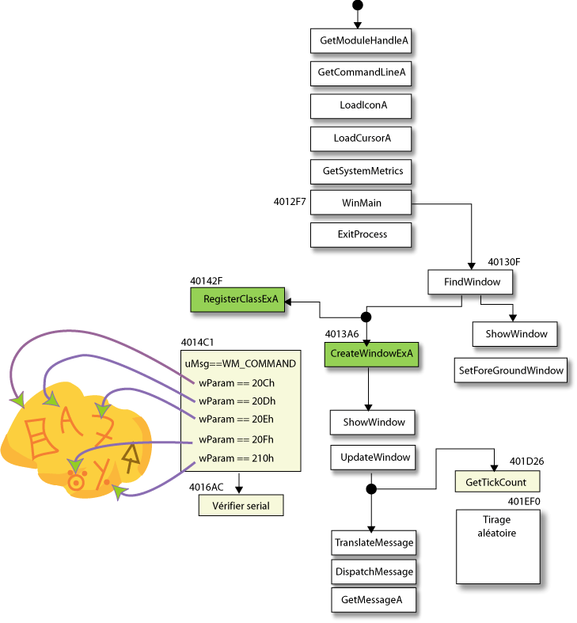

2.SCHEMA DU KEYGENME.
Voici donc pour commencer un rapide aperçu du fonctionnement de ce keygenme. Il s'agit, dans les grandes lignes, d'une simple fenêtre créée par la fonction CreateWindowExA. Nous allons voir comment analyser et localiser les routines utiles.

Dégrossir l'analyse
Le schéma présenté ici devrait être connu par coeur de tous. Il s'agit d'une structure standard de création de fenêtre. ICZELION détaille complètement le fonctionnement de cette approche. On commence toujours par le tronc commun GetModuleHandleA, GetCommandLineA, LoadIconA, LoadCursorA, GetSystemMetrics et un call WinMain. En général, avant de se lancer, un programme vérifie s'il est déjà en cours d'exécution. L'utilisation des Mutex est souvent l'approche utilisée. Ici, esoquynthe recherche une instance de la classe "esoquynthe" à l'aide de FindWindow. S'il en trouve une, il remet le focus sur celle-ci. Dans le cas contraire, il va créer une classe de fenêtres à l'aide de RegisterClassExA (en 40142F) et une instance de cette classe à l'aide de CreateWindowExA (en 4013A6).
Trouver la WinProc ...
Le schéma classique continue avec un ShowWindow / UpdateWindow pour afficher la fenêtre et la rafraichir. Je n'ai pas présenté ici la création des contrôles de cette fenêtre mais il s'agit encore d'un schéma très très classique. Après l'affichage de la fenêtre principale, nous avons droit à la fameuse "Message Loop" qui se charge de distribuer les bons messages aux bonnes instances en traitant les entrées dans le "message queue" à l'aide des fonctions TranslateMessage / DispatchMessage / GetMessage (visibles en bas du schéma). Certains messages transmis à la fenêtre peuvent être interceptés par l'utilisateur via la "WinProc" créée en amont par la fonction RegisterClassExA Cette fonction utilise une structure appelée WNDCLASSEX dont je rappelle ici la composition :
typedef struct {
UINT cbSize;
UINT style;
WNDPROC lpfnWndProc; --------------------- adresse de la WinProc
int cbClsExtra;
int cbWndExtra;
HINSTANCE hInstance;
HICON hIcon;
HCURSOR hCursor;
HBRUSH hbrBackground;
LPCTSTR lpszMenuName;
LPCTSTR lpszClassName;
HICON hIconSm;
} WNDCLASSEX, *PWNDCLASSEX;
Pour trouver l'adresse de la routine qui peut intercepter et traiter les messages envoyés à la fenêtre principale, il suffit de breaker sur la fonction RegisterClassExA et de jeter un oeil sur la pile... dans notre cas, nous voyons apparaître l'adresse 4014C1.
En 4014C1, (dans WinProc), on peut traiter de nombreux messages. Les messages envoyés par les contrôles "BUTTON" sont des messages de type WM_COMMAND, soit la valeur 111h. Vous pouvez y voir aussi d'autres messages qui ne nous intéressent pas ici comme par exemple WM_TIMER (113h) envoyé par SetTimer toutes les 50 ms (il sert à créer l'effet guirlande de noël sur l'espèce de sapin vert). Voyons de plus près la routine de WM_COMMAND :
004014C1 PUSH EBP 004014C2 MOV EBP,ESP 004014C4 ADD ESP,-224 004014CA MOV EAX,DWORD PTR SS:[EBP+C] <------------- Récupère uMsg 004014CD CMP EAX,111 <-------------- uMsg = WM_COMMAND ? 004014D2 JNZ esoquynt.0040155F 004014D8 MOVZX ESI,BYTE PTR DS:[4050FE] 004014DF CMP BYTE PTR DS:[4050FE],4 004014E6 JNB SHORT esoquynt.0040154F 004014E8 MOV EAX,DWORD PTR SS:[EBP+10] <-------------- Récupère wParam 004014EB CMP EAX,20C <------------------ 1er bouton 004014F0 JNZ SHORT esoquynt.004014FB 004014F2 MOV BYTE PTR DS:[ESI+4050FF],0 004014F9 JMP SHORT esoquynt.00401539 004014FB CMP EAX,20D <------------------ 2eme bouton 00401500 JNZ SHORT esoquynt.0040150B 00401502 MOV BYTE PTR DS:[ESI+4050FF],1 00401509 JMP SHORT esoquynt.00401539 0040150B CMP EAX,20E <------------------ 3eme bouton 00401510 JNZ SHORT esoquynt.0040151B 00401512 MOV BYTE PTR DS:[ESI+4050FF],2 00401519 JMP SHORT esoquynt.00401539 0040151B CMP EAX,20F <----------------- 4eme bouton 00401520 JNZ SHORT esoquynt.0040152B 00401522 MOV BYTE PTR DS:[ESI+4050FF],2B 00401529 JMP SHORT esoquynt.00401539 0040152B CMP EAX,210 <----------------- 5eme bouton 00401530 JNZ SHORT esoquynt.00401539 00401532 MOV BYTE PTR DS:[ESI+4050FF],2D 00401539 INC BYTE PTR DS:[4050FE] 0040153F CMP BYTE PTR DS:[4050FE],4 00401546 JNZ SHORT esoquynt.00401551 00401548 CALL esoquynt.004016AC <---------------- ROUTINE !! 0040154D JMP SHORT esoquynt.00401551
Que fait la routine de WM_COMMAND ?
A chaque bouton activé, elle remplit une petite table ( 4 octets) qui débute en 4050FF. Suivant le bouton activé, elle copie les valeurs 0,1,2,2B ou 2D dans cette table. Après 4 passages, elle donne la main à la routine située en 4016AC qui sera chargée de tester la validité de la séquence de boutons choisie.
GetTickCount
Avant de regarder comment fonctionne la routine de vérification du serial, revenons au schéma. Nous voyons qu'une fois la fenêtre créée, le binaire exécute GetTickCount. Il génère de cette façon le fameux SEED dont nous avons parlé précédemment. Par la suite, en utilisant la routine de tirage pseudo-aléatoire, il va copier trois octets en 405103, 405104 et 405105 pris au hasard parmi la liste {0;1;2;2B}. A chaque lancement du binaire, la séquence des 3 bytes est modifiée. Cette séquence est primordiale puisqu'elle est utilisée pour vérifier le serial saisi par l'utilisateur. Ceci signifie donc que le serial change à chaque lancement du binaire. Je ne détaille pas la routine de tirage aléatoire l'ayant déjà abordée dans le paragraphe précédent. Elle ne présente aucune difficulté théorique ou pratique.